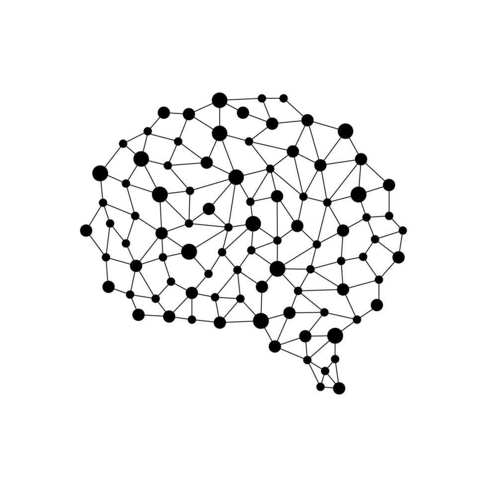

Learning occurs when new connections are formed between neurons, a process called neuroplasticity. Repeated exposure or practice strengthens these connections, making it easier to retrieve and apply the learned information in the future.
To learn more, visit Grammar